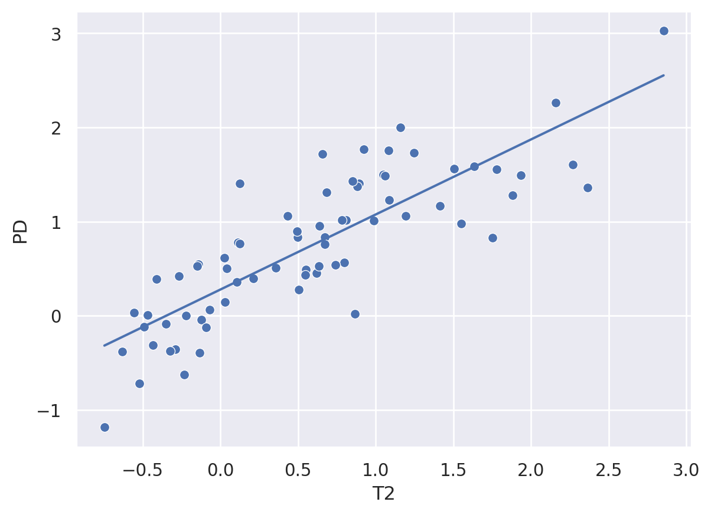

Recall, we discussed a strict threshold classifier with accuracy as the loss function. Now consider continuous prediction, we need a loss function. A reasonable strategy would be to minimize the squared distances between our predictions and the observed values. In other words, \(\sum_{i=1}^n (Y_i - \hat \mu_i)^2.\)
If we were to dived this by \(n\), it would be the average of the squared errors, or the mean squared error (MSE). We can use minimizing the squared error both as a rule for finding a good prediction and as our evaluation strategy for held out data.
What’s left is to figure out how to come up with \(\hat \mu_i\), our predictions for the observation \(Y_i\). We previously considered just a rescaled version of \(X\), our predictor, using regression through the origin. In this module, we’ll try a slightly more complex model that includes a location (intercept) shift and a scale factor (slope). The consequence will be to fit the best line, in a certain sense, through our \(X\), \(Y\) paired data.
To tie ourselves down with an example, consider the previous lecture’s example, consider trying to get the FLAIR value from the other, non-FLAIR, imaging values.
import numpy as npfrom scipy import stats as stimport pandas as pdimport seaborn as snsimport matplotlib.pyplot as plt## this sets some style parameterssns.set()## Read in the data and display a few rowsdat = pd.read_csv("https://raw.githubusercontent.com/bcaffo/ds4bme_intro/master/data/oasis.csv")dat.head(4)
FLAIR
PD
T1
T2
FLAIR_10
PD_10
T1_10
T2_10
FLAIR_20
PD_20
T1_20
T2_20
GOLD_Lesions
0
1.143692
1.586219
-0.799859
1.634467
0.437568
0.823800
-0.002059
0.573663
0.279832
0.548341
0.219136
0.298662
0
1
1.652552
1.766672
-1.250992
0.921230
0.663037
0.880250
-0.422060
0.542597
0.422182
0.549711
0.061573
0.280972
0
2
1.036099
0.262042
-0.858565
-0.058211
-0.044280
-0.308569
0.014766
-0.256075
-0.136532
-0.350905
0.020673
-0.259914
0
3
1.037692
0.011104
-1.228796
-0.470222
-0.013971
-0.000498
-0.395575
-0.221900
0.000807
-0.003085
-0.193249
-0.139284
0
Let’s look at the non-smoothed data (omitting the _10 and _20) using a pair plot. I’m color coding by whether or not the specific voxel is a lesion.
T2 and PD (proton density) look pretty linearly related. Imagine a study where a researcher collected T2 but did not collect PD. Let’s try to predict their PD values from the T2 values using a line. We’ll use least squares as the loss function. Specifically
where \(v\) stands for voxel and \(PD_v\) for the PD value at voxel \(v\), \(T2_v\) as the T2 value at voxel \(v\) and \(\beta_0\) and \(\beta_1\) are parameters that we have to learn.
It turns out that \(\beta_0\) and \(\beta_1\) have optimal solutions that we can write down. We get
\[
\hat \beta_1 = Cor(X, Y) \frac{SD_Y}{SD_X}
\]
where \(Cor(X, Y)\) is the (Pearson) correlation between \(X\) and \(Y\) and \(SD_X\) is the standard deviation of \(X\) (and \(SD_Y\) is for \(Y\)). The intercept satisfies
\[
\hat \beta_0 = \bar Y - \bar X \hat \beta_1
\]
where \(\bar X\) and \(\bar Y\) are the means.
Notice this latter equation reorganized is just
\[
\bar Y = \hat \beta_0 + \bar X \hat \beta_1
\]
pointing out that the fitted line has to go through the point \((\bar X, \bar Y)\).
27.1 Some definitions
The covariance is defined as \(Cov(X,Y) = \sum_{i=1}^n (Y_i - \bar Y) (X_i - \bar X) / (N-1)\)
The standard deviation of \(X\) is \(SD_X\), \(\sqrt{Cov(X, X)}\)
The Pearson correlation is defined as \(\frac{Cov(X, Y)}{SD_X \times SD_Y}\)
The Pearson correlation measures the degree of linear association between two variables where neither is thought of as an outcome or predictor. It is a unit free quantity. If you just say “correlation” without further context, it’s understood to mean the Pearson correlation. The covariance measures the same thing, though it has the units of the units X times the units of Y. The sample standard deviation of X has the units of X and measures the spread, or variability, of X. The variance, \(Cov(X, X)\), is simply the square of the standard deviation and has units of X squared.
x = dat['T2']y = dat['PD']trainFraction =0.75## Hold out datasample = np.random.uniform(size =100) < trainFractionxtrain = x[ sample]ytrain = y[ sample]xtest = x[~sample]ytest = y[~sample]## get the slope on the training databeta1 = st.pearsonr(xtrain, ytrain)[0] * np.std(ytrain) / np.std(xtrain)beta0 = np.mean(ytrain) - np.mean(xtrain) * beta1print([beta0, beta1])sns.scatterplot(x = xtrain, y = ytrain)## add a linesns.lineplot(x=xtrain, y=beta0 + beta1 * xtrain)
[0.34150907800816416, 0.7106244491562108]
<AxesSubplot: xlabel='T2', ylabel='PD'>

print(st.linregress(x = xtrain, y = ytrain))sns.regplot(x=xtrain, y=ytrain)
Let’s now calculate our predictions on the test set. Recall, the test set was not used to come up with estimates of \(\beta_0\) and \(\beta_1\). We’ll show the training MSE and the testing MSE as well as a plot of the test set actual Ys versus the predicted ones.
yhat_test = beta0 + beta1 * xtestyhat_train = beta0 + beta1 * xtrain## claculate the MSE in the training and test setsprint([ np.mean( (ytrain - yhat_train) **2), np.mean( (ytest - yhat_test) **2 ) ])sns.scatterplot(x = yhat_test, y = ytest)plt.xlabel('Predicted value from xtest T2 values')plt.ylabel('Actual PD value from ytest')